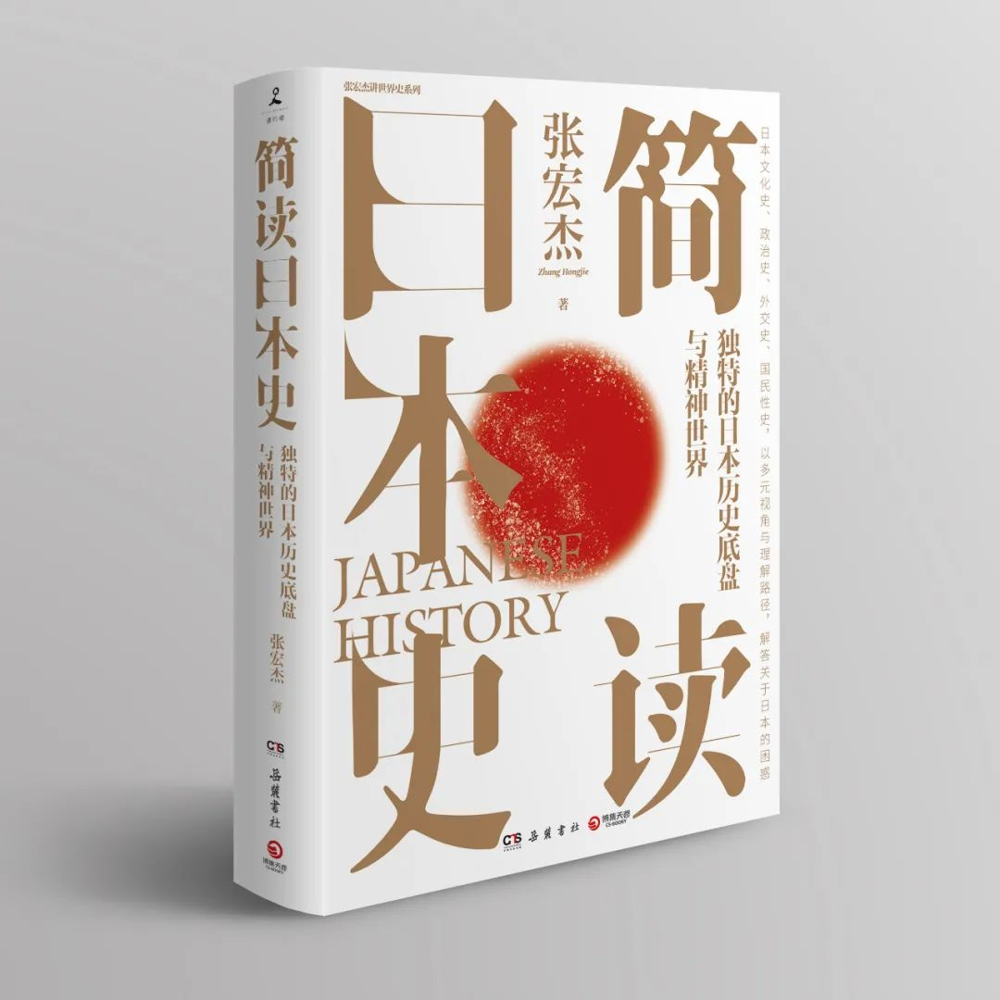

收录于合集


《简明日本史》
★ 特点一：张宏杰 2021年重磅新作！解读独特的日本历史底盘与精神世界，抽丝剥茧日本人历史上的“大现象”与“小事件”，祛除偏见，消解误读。
★ 特点二：张宏杰重点解读日本文化史、政治史、外交史、国民性史，以多元视角与理解路径，解答关于日本的困惑，也为认识中华文明的独特性提供一个参照物。
★ 特点三：立足于日本独特国民性的视角，梳理日本文化脉络，以神话时代到明治维新为重要线索，诠释日本文化独特的世界观念与统治世界的意识，展现中国与日本根本性的文化差异以及日本与世界的密切联系。
★ 特点四：作为一个特别的国家，日本文化的内核超稳定而外表却极易变化，让世人捉摸不定。理解了日本历史的独特性与日本人的精神世界，才能理解日本对东亚、乃至世界历史走向的影响！
一、 基本信息
书名：简读日本史
作者: 张宏杰
上架建议：畅销·历史
装帧：平装
定价：78.00元
出版社：岳麓书社
开本：16开
页数：504页
出版时间：2021.7
ISBN：978-7-5538-1526-8
二、 作者简介
张宏杰，复旦大学历史学博士，清华大学博士后，现为中国人民大学历史学院研究员。著有《简读中国史》《曾国藩的正面与侧面》（全三册）《大明王朝的七张面孔》等。曾在《百家讲坛》主讲《成败论乾隆》。大型纪录片《楚国八百年》总撰稿。
三、 一句话推荐
独特的日本历史底盘与精神世界——历史学者张宏杰继《简读中国史》后，2021新作重磅上市！日本文化史、政治史、外交史、国民性史四合一，超广视角与独特理解路径，解答关于日本的困惑！
四、 内容简介
日本是一个特别的国家，文化内核超稳定而外表却极易变化，让世人捉摸不定。理解了日本历史的独特性与日本人的精神世界，才能理解日本对东亚、乃至世界历史走向的影响。
本书从四个维度为读者呈现了一部立体而丰富的日本历史。第一部分从日本人独特的性观念切入，分析日本历史和文化的独特性；第二部分按时间顺序，简述从绳纹时代到明治维新的历史，重点是分析日本为什么进行大化改新，以及大化改新何以失败，对比日本历史轨迹与中国的相似之处和不同之处；第三部分分析日本人的世界观念以及历史上的中日关系；第四部分则总结日本国民性的成因及特点。
本书以多元视角与理解路径，解答关于日本的所有困惑，也为认识中华文明的独特性提供一个参照物。
五、 目录
自序 日本和中国骨子里不一样
第一编
日本人的性观念和精神世界
第一章 日本神话中的“性”内容
第二章 日本皇族为什么长期内部通婚
第三章 日本人历史上的“性放纵”和“性自由”
第四章 日本人并不奇怪：中国古人也是这样“随便”的
第五章 从性习俗看日本历史演变的核心秘密
第六章 朝鲜人对日本人性风俗为什么如此惊骇
第七章 性观念对日本历史的影响：日本人真的很淫乱吗
第九章 日本人的姓氏为什么这么奇怪
第十章 高贵的长子，悲哀的次子
第十一章 日本的鬼和中国的鬼不一样
第二编
日本简史：从神话时代到明治维新
第一章 难解之谜：日本人是从哪儿来的？
第二章 倭奴国、邪马台国和大和国
第三章 大化改新背后的历史动力
第四章 大化改新的真实过程
第五章 大化改新为什么失败
第六章 从摄关制到院厅制：架空与反架空的斗争
第七章 幕府时代的到来
第八章 日本战国和中国战国如出一辙
第九章 日本的自治社会：民众学会了自我管理
第十章 织丰时代：两个个性十足的军事霸主
第十一章 固化的江户时代
第十二章 不打不相识：黑船来航与明治维新
第十三章 日本为什么能这么快转身
第十四章 中日不同：外国人的观察和日本知识分子的认识
第十五章 福泽谕吉为什么告别儒学
第三编
日本与世界
第一章 日本一直是中国的属国吗？
第二章 荷兰是怎么成为日本“谱代大名”的：日本的朝贡体系
第三章 日本人的神国观念
第四章 “倭寇”是怎么出现的
第五章 倭寇里为什么有中国人
第六章 丰臣秀吉为什么要征服世界
第七章 明朝为什么能击败丰臣秀吉
第四编
日本人的国民性
第一章 日本人“集团主义”性格是怎么形成的
第二章 日本人为什么特别守规矩：“村八分”“等级意识”与规矩意识
第三章 日本人为什么会“过劳死”：员工就是“武士”，企业就是“藩国”
第四章 “集团主义”的利与弊
第五章 匠人精神与日本人的性格
第六章 “长他人志气，灭自己威风”：日本人的强者崇拜
第七章 武士道就是赴死之道
第八章 青年日本与老年中国
第九章 从“臣民”到“国民”：日本人是怎么改造国民性的
第十章 从“民族主义”到“军国主义”：自我膨胀的代价
第十一章 日本人对本国国民性认识的戏剧性变化
六、 自序：日本和中国骨子里不一样
一
有人问，书店里各种版本的《日本史》已经那么多了，你为什么还要凑热闹再写一本？
我的回答是，我关注的重点和大部分作者不太一样。
这本《日本史》想要解答的第一个问题是日本人独特的国民性是怎么形成的。
对中国和日本都有深入研究的傅高义说，日本国民性最突出的特点是团结性强。他说，中国也在强调团结重要，但是实践得远没有日本人好。中国社会有一个虽然夸张但流传很广的说法，“一个中国人是一条龙，三个中国人是一条虫；一个日本人是一条虫，三个日本人是一条龙”。傅高义对比中国和日本到哈佛大学的考察团，“在日本，一个团能将其考察的成果向其他的考察团提供，而在中国，很多情况下是前面的团考察的结果，后面的团不知道。……中国各单位、部门的本位主义太强，缺乏彼此联系和协 调”。
日裔美国学者福山则认为，中国是一个“低信任度社会”，即陌生人之间彼此信任的程度不高，对家族以外的其他人存在极度不信任。而日本是“高信任度社会”，整个社会信任度高，内耗小。日本人非常遵守公共秩序，日本关联企业之间的内斗也很少，信任合作进行得比美国、中国等很多国家要好。傅高义、福山的说法当然都是一家之言，但是日本社会协调性强，公共秩序好，这确实是绝大多数观察者的共识。
日本国民性的另一个特点是转弯快。
有一个日本朋友说，她发现几乎所有中国人都对明治维新特别感兴趣，几乎所有人都会和她聊起明治维新。
其实中国人最感兴趣的，是日本在世界剧变面前为什么能这么迅速地转身，而且变得这么彻底？
确实，在明治维新之前，日本社会的舆论主流是“攘夷”，充斥着各种排外声音，但是当萨摩和长州被西方人痛打了一次之后，全日本马上清醒过来，迅速转向，彻底改革。明治维新触动了太多既得利益者的蛋糕，但仍然顺利完成，在很短的时间内就让日本实现了“脱胎换骨”。
那么，日本人的团结性、协作性，是从哪儿来的？日本人在危机面前为什么转弯转得这样快？
通过梳理日本历史，我的看法是：以上这些特质，都与日本人身上的“集团主义”特质有关。日本人总是“抱团”式地生活，如同一群鱼，平时总是井然有序地朝一个方向游。如果你朝水中扔一块石子，它们短暂受惊后，又马上集体转向另一个方向。当然凡事都有两面。这种国民性格特点，一方面导致日本社会协调性强，转向迅速；另一方面，一旦领导层决策错误，也会导致日本人盲从集体，犯下重大错误，正如日本在二战期间经历过的一样。
那么日本社会为什么会呈现“集团主义”的特点？日本式的“集团主义”是漫长的历史塑造的。日本的历史和文化，很多地方表面上和中国很像，但是骨子里完全不同。
二
这就涉及这本书探讨的第二个问题，即日本和中国到底有什么不同。
中国人对世界的误解之一，就是日本“克隆”了中国文化，和中国“同文同种”，因此没有本质区别。
没错，从表面上看，中国和日本确实有太多的相似之处了，相似的长相、相似的建筑、相似的文字，甚至文化性格和思维方式都有很多相似之处：两国人都注重形象思维和直觉感悟。两国人为人处世都讲究含蓄，说话都习惯于拐弯抹角。两国人都注重集体主义，倾向于压抑个性。中国人常说“出头的椽子先烂”，而日本也有一句人人尽知的谚语，“出头的钉子先挨敲”。
但是，在这些相似下，再深入挖掘一层，就会发现中日之间很多根本性的不同。对这些不同，中国读者了解得并不深入。
第一，中国从周代开始就认识到近亲结婚的危害，确立了“同姓不婚”的传统，日本历史上却长期盛行近亲结婚，特别是日本皇室的内部通婚，比如兄妹通婚成为传统。大化改新之后，虽然日本几乎全方位地学习中国，但是皇室内部通婚这种在中国文化看来绝对“逆天”的风俗却依然未改。
第二，中国文化中性禁忌产生得非常早，男女之别甚严。受中国文化影响很深的朝鲜李朝也曾经贞节牌坊遍地。日本人却一直没有培养起贞操意识，长期男女混浴，没有出现过太监，没有出现过贞节牌坊，也没有裹过小脚。
第三，日本的家族制度与中国相当不同。中国家族文化中血缘意识很强，能生一定要自己生，实在不行才收养，而且一般不收没有血缘关系的人为养子。然而日本却盛行收养无血缘关系的养子，甚至自己有亲生儿子也可能把家业交给养子。
第四，中国人分家时一般诸子均分，也就是每人都有一份，长子和其他孩子的地位没有本质差别。而日本传统家庭实行“长子继承制”，长子和其他孩子之间的地位差别非常大。在农民家庭，长子是主人，其他儿子类同奴仆。传统日本有些地区，只有长子才能结婚，其他儿子根本没有结婚的权利。
第五，汉语里有花样百出的国骂，但是日语里却几乎没有脏话，“唯二”的两句“脏话”还都是来自汉语。第一个是“馬鹿”（ばか，即“八嘎”），来自汉语的“指鹿为马”。“八嘎”后面有时还要加一个“呀路”，这个“呀路”也是来自汉语，即“野郎”，就是“村夫、没教养的人”的意思。
这两句脏话听起来实在是太文弱，在中国不过相当于幼儿园小朋友骂架的水平。
第六，中国的坟墓都远离生人居所，在荒郊野外。而日本城市里存在大量墓地，有些与住宅小区就一墙之隔。我在东京访学之时，宿舍对面就是一处墓地。中国人一般认为，人死后会变成鬼，靠子孙后代烧纸钱活着。而日本人认为，人死后或成为“神”，或成为“佛”，不必害怕，也不需要烧纸钱。
第七，中国有句老话，“好死不如赖活着”。而日本人的一般取向与此相反，对日本人来说，“死是最高艺术”，死亡意味着清洁、超脱、干净，一切罪孽都随着死亡而消失。众所周知，日本是世界上自杀率最高的国家之一。奈良有个很小的古刹，叫“暴死寺”，香火很旺，每天都有人来此烧香参拜，祈求自己“暴死”。
第八，日本战国时代曾经出现广泛的社会自治现象。在自治乡村中，农民们自己处理普通司法案件。有些“惣村”甚至还拥有了“立法权”。在自治乡村的基础上，日本也出现了自治城市，自治城市拥有自己的司法权，许多城市还拥有自己的武装力量，甚至拥有专门维持治安的警察。这些在中国历史上都是完全不可想象的。
第九，中国人从小就受到“集体主义”教育，但是在实际生活中，行事并不全然如此。中国人非常重视家族和亲戚关系，重视“私德”，在社会上则不那么重视“公德”。日本人却不那么重视家族和亲戚关系，倒是发自内心地热爱“公司”“单位”等集体。在日本人的价值观中，“不给别人添麻烦”差不多是最高准则。
第十，中国人有着强烈的民族自尊心和民族自豪感，鸦片战争之后，中国社会长期存在着“受害者意识”和“仇外情绪”。而日本人骨子里同样自尊且敏感，但是日本国民性中又有一种独特的“强者崇拜”，或者叫“拎得清”：你比我强，把我打败了，我一不忌妒二不仇恨，而是老老实实向你学习。“鸦片战争”在中国是国耻，迫使日本开国的武力威胁“黑船来航”却被日本人当成带领日本走入现代文明的“恩惠”。
……
了解了这些，你还会认为日本文化和中国文化“基本一样”吗？
三
那么，这些不一样是怎么形成的呢？
中日文化之间的巨大差别，可以追溯到原始社会。
中国从母系文化到父系文化，从原始时代到农业时代，实现了巨大的文化跨越。很多原始时代形成的文化习俗，后来已经消失或者严重变形了。比如普通中国人很少有人会意识到，祖先的祖字，是由代表生殖器的“且”字演变而来的。
而日本文化保留了大量的原始时代、母系社会时代的文化因素。至今日本还有400座左右生殖器崇拜的神社。比如小牧市神社祭祀的就是一根大约长七米、直径一米的木制阴茎。“每年到生殖祭的时候，男女老少，大人小孩手上都会抱着一个男性生殖器官样子的人偶参加到祭的游行队伍中，连观念开放的外国媒体都瞠目结舌。但日本人对此没有一点忌讳，他们只单纯地认为那个生殖器模样的人偶是神，希望亲近、触碰、抚摸神来得到祝福保佑，就像西方人触摸耶稣基督的神像一样，再自然不过。”
除了原始的性观念，日本人在原始时代形成的还有“神道教”，这是从万物有灵的萨满教发展起来的原始宗教。日本人集团式的定居生活方式，也是从原始时代就开始的。一般人类社会是进入农业社会后才开始定居，而日本在原始社会后期的绳纹时代，也就是采集时代，就开始定居，形成日本独特的“村社文化”的萌芽。
日本著名学者上山春平说，今天的日本文化表面上有浓厚的“欧洲色彩”；剥去这一层，下一层是中国文化色彩很强的“农业社会”文化；再往下剥一层，就是原始时代即绳纹时代的文化精神。“绳纹文化的遗产……虽几度变形，但仍以种种形态继续生存下去。……对我们的生活和文化仍然起着作用。”
日本之所以能保留这么多上古文化因素，当然是因为日本地理条件的特殊。日本平原很少，国土约75%属山地丘陵地带，小规模的山间盆地散布全国，形成一个个相对独立的地理单元。这种地理结构不利于迁徙，导致日本社会小共同体长期稳定，逐渐形成了“集团主义”的生活方式和思维方式。与此同时，日本离亚洲大陆不远不近，既可以避免大陆的兵锋，又可以从容地向大陆学习。由于日本向大陆学习不是通过被征服、被融合的方式，所以原本的文化基座并没有被打碎。比如大化改新中，日本引进了大部分中国制度，但没有引进科举制，也没有引进中国的家族制度，没有引进中国的孝文化、贞操观念。因此日本在实现跳跃式发展的同时，它的历史基盘，也就是集团式的生活方式并没有被摧毁。
我们往往夸大了大化改新对日本历史的影响。事实上，大化改新虽然效果显著，成就辉煌，但并没有从根本上改变日本历史的个性。大化改新的成功并没有持续太久，一百多年后，日本又滑回到了原有的轨道。从整个日本历史来看，大化改新的全面“中国化”，只是日本历史之旅中的一次短暂脱轨。稍微熟悉日本史的读者都会知道两个词，一个是“和魂洋才”，一个是“和魂汉才”。其实日本还有一个词，“绳魂弥才”。这三个词构成一个序列，背后显示出日本文化发展的一个规律：远离大陆的封闭环境，造成了日本文化核心的稳定性。一旦遇到强有力的外来刺激，日本又会跳跃式地发展，外表发生巨变，不过骨子里的一些东西仍稳定不变。
日本的历史轨迹因此显得与汉字文化圈的其他几个国家——中国、朝鲜和越南非常不同，中国文化对日本的影响，最终主要遗留在了文字、文学、服装、建筑等表层物质文化方面。日本原始文化的很多成分，比如母系社会的“走婚”习俗，独特的性观念，原始时代的神道教传统，村社文化，都相当程度地保持了下来，并且有机地嵌入今日日本社会的运转当中。
中日文化的另一个根本性区别是，中国文明是原生的，长期远比周边文明发达，具有强大的辐射力，因此一直有一种“傲视四方”的上国心态。而日本文明是受到中国文明的辐射才发展起来的。从一开始，中国的先进就一目了然而且辉煌耀目，由于地理上的安全，历史上外来文明给日本带来的一直是巨大的惊喜而不是恐惧。因此从一开始，日本人就形成了强大的“崇洋心态”和学习本能。
四
这本书要探讨的第三个问题，就是日本人怎么看待历史上的中日关系，以及日本为什么三度向大陆扩张。
中国人对日本历史的另一个很大的误解，是日本和朝鲜一样，历史上一直是中国的朝贡国。
事实上，在几千年间，日本只有一个时期，那就是“倭五王”时期（约为中国南北朝时期），是中国真正的朝贡国，除此之外，在隋唐、五代、两宋、元朝和清朝，日本都算不上是真正的朝贡国。遣隋使因为国书中称“日出处天子致书日没处天子”，惹得隋炀帝不悦。后来的遣唐使则从来没有携带过国书，而国书表文是建立朝贡关系的最重要的标志。朝贡关系的另一个重要标志，是宗主国要册封朝贡国的国王。但是在唐朝，日本从来没有像其他朝贡国那样，请求中国皇帝的册封。在唐代日本人自建年号，自称“天皇”，自处于与中国平等的地位，是不争的事实。
有宋一代，中国和日本只有民间交流而一直没有官方关系。元代忽必烈两度派遣当时世界上最大的渡海远征军入侵日本，仍然没能使日本人屈服。到了室町幕府时期，即明代前期，幕府为了获得巨大朝贡利益，曾经伪造了一个并不存在的“日本国王”的头衔，和中国展开朝贡贸易，然而事实上并不奉中国正朔，因此也算不上典型的朝贡活动。在中国清朝时期，日本甚至通过“正德新例”，试图把中国纳入日本的朝贡国体系。因此在中国的朝贡圈中，日本和朝鲜、越南、琉球甚至泰国都不一样，不能算是藩属国。
不但不向中国称臣，日本历史上还长期自认为是天底下独一无二的“神国”，日本人甚至试图建立“日本型华夷秩序”，即以神国日本为中心，来统治世界万国。1610年，德川幕府致中国福建总督转中国皇帝的信中说：日本“德化所及，朝鲜入贡，琉球称臣，安南、交趾、占城、暹罗、吕宋、西洋、柬埔寨等蛮夷之君主酋长，莫不上表输贡”。因此日本历史上有一个规律性的现象，一旦实现统一，就必对外侵略。刚刚开始大化改新羽翼未丰的日本就试图与大唐一争高下，导致朝鲜半岛上的白江口之战。丰臣秀吉刚刚统一日本，就迫不及待地发动壬辰朝鲜战争，试图以宁波为首都，统治世界，成为“万皇之皇”。日本明治维新刚刚开始，就兴起了“征韩论”，并在不久后发动了中日甲午战争。至于第二次世界大战，则是日本丰臣秀吉时代征服世界梦想的又一次尝试。
因此，日本文化中一直包含着独特的世界观念和统治世界的意识，这个小国表面上彬彬有礼，骨子里却长期燃烧着征服世界的野心。这是影响日本、东亚甚至世界历史走向的重要因素。
五
恐怕没有什么感情比中国人对日本的感情更加复杂和矛盾的了。提起日本，大多数中国人的感觉都是如同“打翻了五味瓶”，酸甜苦辣，一时不知从何说起。
这是我们最熟悉的一个国家。日本的动漫、游戏和音乐，弥漫在每个90后中国人的成长背景当中。年纪更大的人则更熟悉《地雷战》《地道战》《血疑》和《追捕》。
这又是我们最陌生的一个国家，虽然有着几千年的交往，但传统中国通常都全神贯注于同来自西北的马上民族打交道，忙于处理大陆上的兵戈纠纷，除了被“倭寇”在沿海偶尔骚扰一下之外，并不重视日本的存在。甚至在甲午战争之后，乃至第二次世界大战之后，中国对它还是没有给以足够的关注。因此大部分中国人对日本所知甚少，或者说误解多多。提到日本，很多中国人头脑中第一个跳出来的词便是仇恨。
然而，“不共戴天”只能是一种情绪化的表达。不论何时，我们都不得不与这个国家同处一片天宇之下，不仅如此，还不得不与它“一衣带水”，紧紧相依。因此，仅仅仇恨是不够的。
当然，了解日本是不容易的。不光中国人对日本不太了解，世界上其他国家的人也多有这样的感觉。本尼迪克特深有感触地说：“在美国曾经全力以赴与之战斗的敌人中，日本人的脾气是最琢磨不透的。”而李光耀说得更为直接：“日本不是一个普通正常的国家，它很特别，有必要记住这一 点。”
正因为如此，我们才需要多花些时间和精力，来深入了解一下这个独特的国家。这就是我写这本书的动机。
因此这本《简读日本史》分成四部分。第一部分从日本人独特的性观念切入，分析日本历史和文化的独特性；第二部分按时间顺序，简述从绳纹时代到明治维新的历史，重点是分析日本为什么进行大化改新，以及大化改新何以失败，对比日本历史轨迹与中国的相似之处和不同之处；第三部分分析日本人的世界观念以及历史上的中日关系；第四部分则总结日本国民性的成因及特点。
排版 | 石寒冰 方引弓
好好学习，天天“在看”